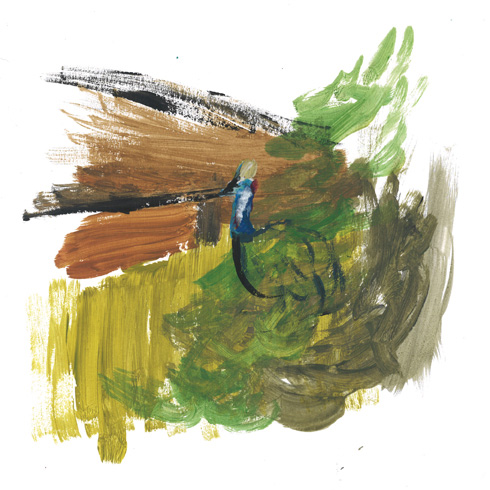
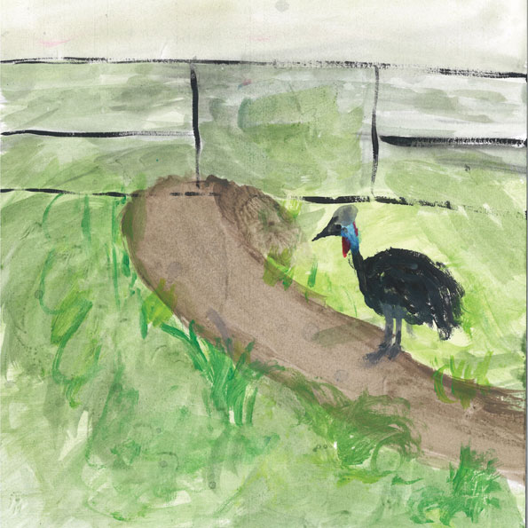
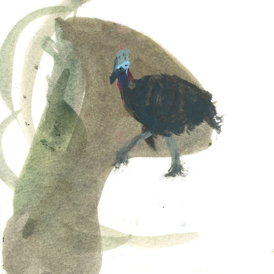
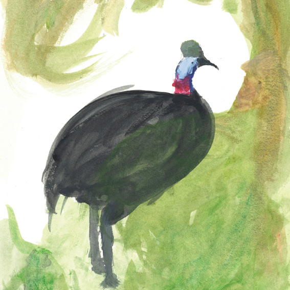
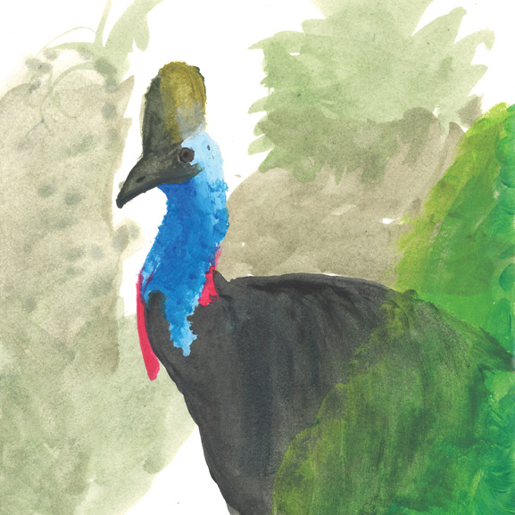

Pendant 5 semaines j'essayais de l'observer à travers des grilles noir en fer forgé ornées de petits
carrés.
C'est une édition qui raconte ma relation et l'histoire de ma relation avec lui.
Dans un tout premier temps, je cherchais un animal à dessiner au zoo, puis, je me suis attardé devant sa
cage juste parce que je ne le voyais pas.
Il est très souvent caché car son enclos est assez
vaste.
"Putain, il est ou le gros dindon ?" C'est une des phrases que j'ai pu entendre de la part
d'un visiteur.
Très violent...
C'est peut-être ce qui m'a dicté de persevérer devant cet enclos car je me sentais offusqué pour
lui.
Lorsque je l'ai vu la première fois, il m'a vraiment impressionné par ses couleurs mais je l'ai trouvé
un peu drôle et ridicule à la fois. J'ai décidé de rester et de voir ce qu'il faisait de son temps libre.
Au fur et a mesure que je passais du temps avec lui, je lui ai donné un petit nom et nous avons
developpé
une amitié, en somme.
A la fin, ça a été un vrai déchirement de le quitter.
Mon édition raconte le coté burlesque et humoristique que je voyais en lui au début de notre relation et
aussi le fait qu'il me fuyait, je le voyais de loin pour ensuite arriver à une amitié avec un grand
coureur charismatique
qui m'approchait beaucoup et de très près et prenait de belles poses.
Une gradation de la couleur du papier pour montrer cette évolution. Du blanc de l'indifférence au jaune de l'éclat dont il m'a submergé lors de ma toute dernière visite. Il m'a littéralement inondé de charisme. Par une feuille de rodoïde transparent intercalée entre chaque dessin, j'ai représenté la vitre mal exposée, qui refletait le soleil et qui nous séparait constamment, et la frustration de ne pas pouvoir être en contact direct avec lui alors qu'il était si proche.
    